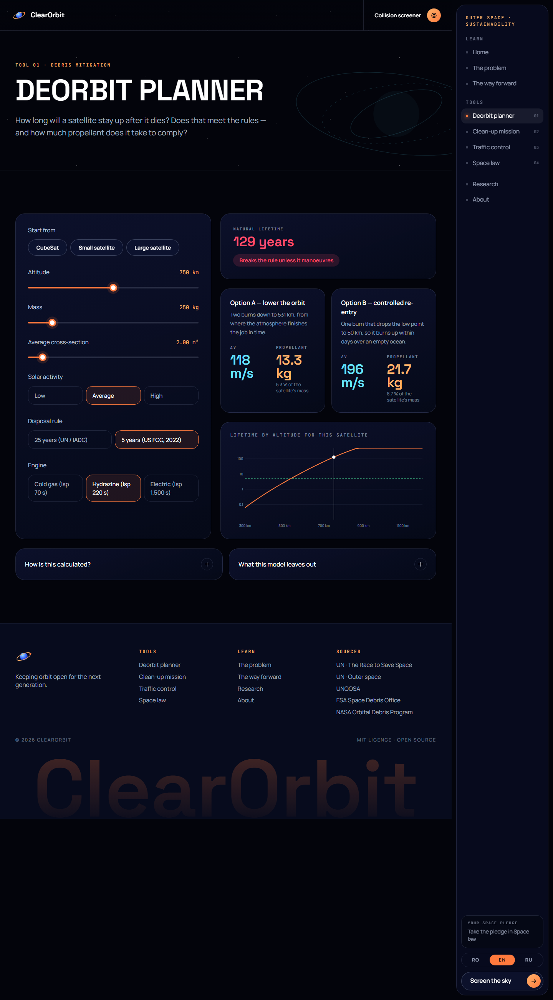
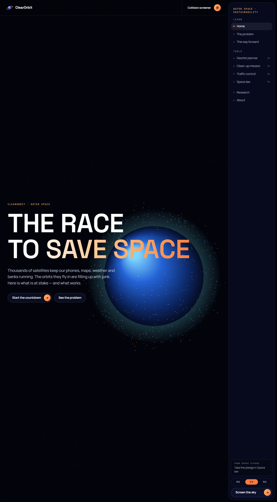

01The problem: orbit is filling up
Satellites run our phones, maps, weather forecasts and banks. Their orbits are crowded with dead satellites and fragments moving at 7–8 km/s — a 30 g bolt hits like 2.6 cars crashing.
40,500
objects > 10 cm, tracked by radar
1.1 M
objects of 1–10 cm, mostly untracked
130 M
fragments of 1 mm – 1 cm
Satellites launched per year
Every collision makes more debris, which makes more collisions — the Kessler cascade. Operators must check every pair of objects for close approaches every day, and pairs grow with the square of the catalogue: 40,000 objects ≈ 800 million pairs. Filed applications could put over a million satellites in orbit.
Sources: ESA Space Debris Office (2025); UN DGC & UNOOSA, The Race to Save Space (2025).
02Question & hypothesis
Can screening keep up with a million-object sky — without missing a single close approach — now that mega-constellations crowd one orbital shell?
- H1≥ 99 % fewer pair checks at N ≥ 1,000.
- H2At N = 2,000, lower 95 % CI bound of the speed-up > 4×.
- H3Recall = precision = 1 in all 100 scenarios.
- H4The classical apogee–perigee filter removes < 90 % of checks.
Pre-registered and hashed (SHA-256 1d7bf2af37c4…) before the run.
03Method: three ways to find close approaches
A · reference
Brute force
Checks every pair at every 20 s step. Always right; work grows as N².
B · classical (Hoots, 1984)
Apogee–perigee filter
Drops pairs whose altitude bands never overlap — weak when thousands share one shell.
C · proposed
Spatial hash grid
Hashes positions into cubes as wide as the alert gate; compares only the own and 13 neighbouring cells.
100
scenarios: 4 sizes (250–2,000) × 25 seeds
300
timed runs, order rotated, warm-up first
10 km
alert distance, 90-min window
45 %
objects in one 550 km constellation shell
37
automated tests, one shared event definition
04Results — all four hypotheses supported
99.84 %
fewer pair checks with the grid, at every size (H1 ✓)
6.09×
faster at 2,000 objects, 95 % CI 6.06–6.11 (H2 ✓)
0 missed
recall = precision = 1.00 in all 200 fast runs (H3 ✓)
76 %
is all the classical filter removes in a crowded sky (H4 ✓)
Fig. 1 — Speed-up over brute force (geometric mean, 95 % CI)
Honest finding: at 250 objects the grid is not faster (0.97×) — building the cells costs as much as checking every pair. Its advantage grows with the catalogue.
Fig. 2 — Time per 90-min window as the sky fills up (log–log)
Exploratory sweep to 16,000 objects; all methods agreed on every event. At 16,000 the grid is ≈ 37× faster than brute force.
05Economic impact
Continuous screening, 16 windows a day; measured 4.62 ns per check; USD 0.05 per CPU-hour (AWS EC2 on-demand range, 2026).
A future sky of 1,000,000 objects
| Today · 40,000 | Future · 1,000,000 | |
|---|---|---|
| Brute force | 4.4 CPU-h/day · USD 81/yr | 2,775 CPU-h/day · USD 50.6k/yr |
| Grid | 0.05 CPU-h/day · USD 1/yr | 2.1 CPU-h/day · USD 38/yr |
99.9 % less compute. Brute force needs 116 cores running non-stop; the grid fits on one school laptop.
07Conclusions
- Spatial hashing finds every close approach brute force finds, doing 0.15 % of the work.
- Its advantage grows with the catalogue: 1.75× → 3.28× → 6.09×, ≈ 37× at 16,000.
- 1980s shell filters lose their power in crowded skies: screening must be spatial.
08Responsible AI
An AI coding assistant (Claude Opus 5.5, Anthropic) helped write code and text. Every formula is checked against its source and covered by 37 automated tests, which caught a real bug before the benchmark. Results come only from running npm run benchmark. No AI images; every prompt is logged in docs/AI_USAGE.md.
06The platform: four tools, one per UN solution React · TypeScript · Vite · EN / RO / RU · no tracking · Vercel

